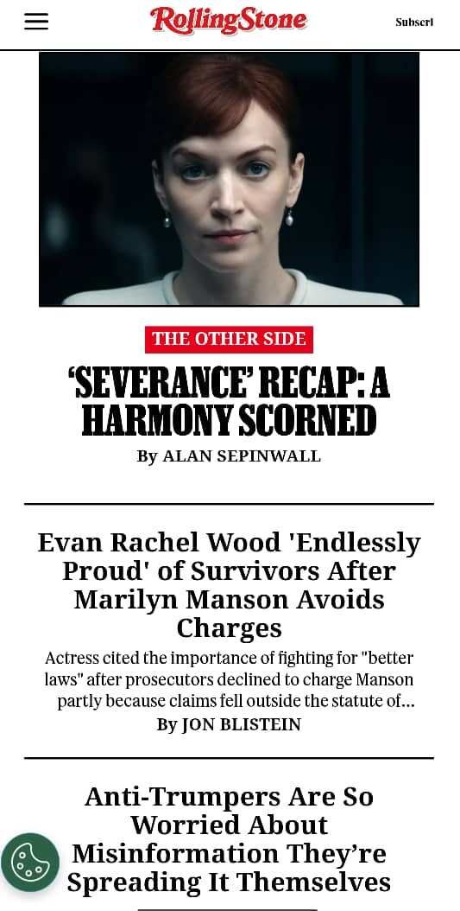

White Space and Clean Design
Zara
Zara.comZara uses a picture as white (or negative space), this divides the content from the header and makes the user scroll down to see more of the page.
Rule of Thirds
Rolling Stone
Rollingstone.com Rolling Stone uses the rule of thirds to boost the content in the middle, the principal articles are right in front of the reader, while the others are to the sides.
PARC: Contrast
Udemy
Udemy.comUdemy uses purple from its logo to contrast with the white background. This contrast of white and purple also enhances and diverts the reader's eyes to the intended option (claiming discounts or enrolling in a class).